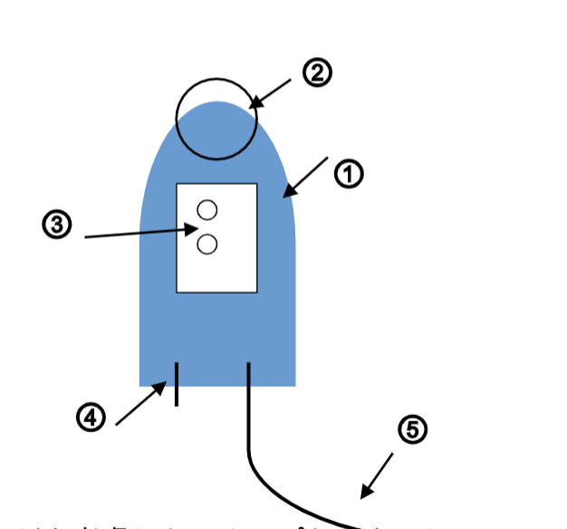
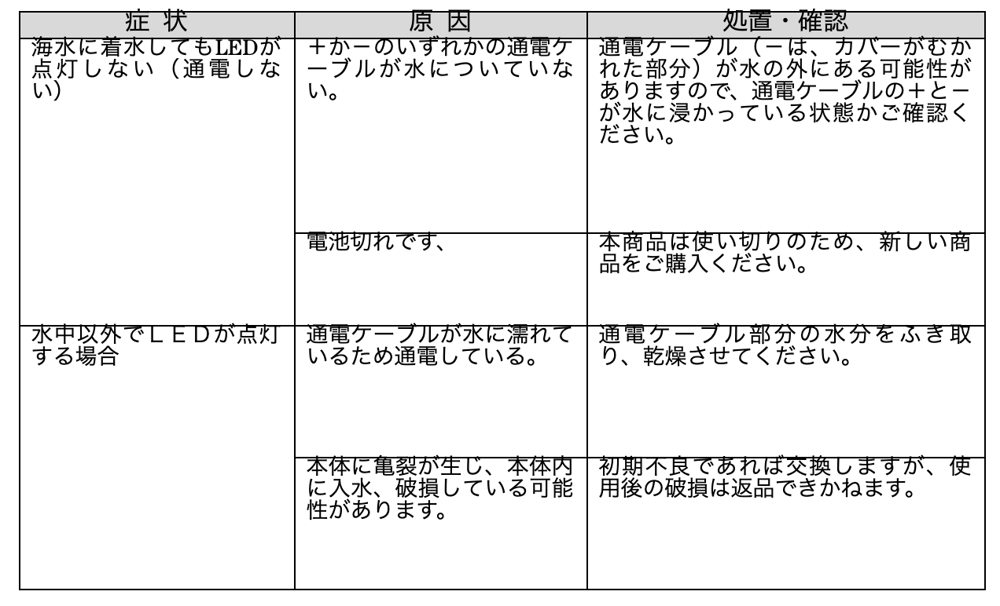

サメ回避装置 「海園」 取扱説明書 品番H1-100M
この取扱説明書をよくお読みになり、ご理解頂いた上で、ご使用ください。
ご使用の前に「安全上のご注意」を必ずお読みください。
１… 安全上のご注意
２… 各部の名前
３… 使い方
４… お手入れ
５… 仕様
６… 故障かなと思ったら
７… 不良品の交換・廃棄について
８… 保証書
１ 安全上のご注意
警告…この表示を無視して誤った取扱いをすると、人が死亡または重傷を負うことが想定される危害の程度を示しています。
弊社の修理技術者以外は、絶対に分解したり改造しないでください。
異常時（焦げ臭い、発煙、高温状態など）は、水中に入れず、使用を中止して弊社までご連絡ください。
本体の内側樹脂加工部分に、ピンや針金などの金属物等異物を入れないでください。
海中以外のプールや水槽などに入れないでください。特に、水洗いする場合、本商品を複数同時に水につけないでください。感電の恐れがあります。
本製品はサメを回避することを100％保障するものではありません。サメの種類、状態、食性によって被害を受ける可能性がありますので、人がサメをよける目的では絶対に使用しないでください。
通電ケーブルが、酸化による劣化、破損、欠損など引き抜かれた状態では使用しないでください。
通電ケーブルに異物が付着している場合は、ふき取ってください。
通電ケーブルには、引き抜く力などを与えて使用しないでください。
自動車内や暖房器具のそばなど、40度以上の高温になる場所に放置しないでください。
使用後はよく海水を洗い流し、通気性の良い場所で乾燥し保管してください。
お手入れを行わずに本製品を使用し続けないでください。
注意…この表示を無視して誤った取扱いをすると、人が損害を負うことが想定されるか物的損害の発生が想定される危害・損害の程度を示しています。
小さなお子様や、取扱説明書が理解できない方のみで使用しないでください。
本商品を外部から踏みつける、金属による圧力を加えるなど、外部的な圧力がかかる状態で使用しないでください。
たたいたり落としたりなどの衝撃を本体に与えないでください。
本体部分に重りや仕掛けが接触する状態で使用しないでください。
本商品は、海中で使用するもので、真水のプールや水槽などに入れないでください。
２ 各部の名前

① 本体（プラスティック樹脂加工部）
② コネクター部
③ ＬＥＤ点灯部
④ センサー電極（通電ケーブル）
⑤ 出力ワイヤー（通電ケーブル）
※⑤矢印箇所が、むかれて通電する箇所です。
３ 使い方
【はじめに準備すること】
コネクター部に、対象魚種や潮の速さなどを考慮したスナップなどをつけてください。
出力ワイヤー（長く伸びた電線）は、使用開始前に先端のビニール部分を１センチほど剥いて、銅線をむき出しにして使用してください。
釣りを開始する前に海水バケツなどに一度本商品をつけ、通電・稼働するかを確認してください。
釣りを開始する前に電極、ワイヤーともに白色に変色するなど、結晶化していないか確認してください。変色が見られる場合は、お手入れのとおり、ブラッシングしてください。
本商品を投下するタイミングは、基本的には対象魚のヒット後に、海中へ投下することをお勧めします。
対象魚種が、キンメダイ、ムツなどの場合は、巻き上げ開始時、直ぐに本商品を投下することが効果的であると確認されています。
【ヒット後の使用方法について】
本商品は、海中へ投下され海水に接触すると同時に電源ＯＮになります。仕掛けを回収し、海水から出せば、自動的に電源はＯＦＦになります。
通電稼働時、青色ＬＥＤが常時点灯します。
稼働開始時には、赤色ＬＥＤが３回点滅し、エラーの場合は赤色ＬＥＤが４回点滅し、稼働が停止します。海水に投下され、稼働がされる場合は、６秒から２秒に１回の間隔で、赤色ＬＥＤが点滅します。
通電が終了（電池残量が無くなる）すると、赤色ＬＥＤが４回点滅して、青色ＬＥＤも同時に消灯します。電池が無くなり、使用できなくなる合図です。
本商品は、海水内に連続で１時間以上つけている状態を想定しておりません。電極の結晶化によって劣化を早めますので、できる限り短時間で海水から回収をしてください。
４ お手入れ
釣り終了後は、真水でよくすすぎ、水分をよくふき取ってください。
センサー電極と出力ワイヤーが触れないよう保存してください。
高温多湿の場所を避け、直射日光の触れない通気性のよい場所で、保管してください。
１０時間を超えて本商品を使用し続けると、通電ケーブルが白色に結晶して、電気のとおりが悪くなります。白色に変色した場合は、変色個所を歯ブラシなどで磨いてください。
仕様前には、稼働確認をしてください。コップなどの水に本商品の通電ケーブルの電極、ワイヤー部分を同時に着水させると、青色ＬＥＤが常時点灯、赤色ＬＥＤ点滅稼働します。
青色LEDが常時点灯、赤色LEDが２秒から４秒に１回点灯します。点灯しない場合は、電池切れです。
出力ワイヤー（長く伸びた電線）の先端が、時間の経過とともに緑色に緑化して通電を阻害するようになります。その場合には、紙やすり、ブラシなどで緑化部分を削って、通電しやすくする手入れをしてください。
５ 仕様
本体サイズ （約） 直径２０× 長さ８０（ｍｍ）
本体重量 （約） ３０ｇ
通電ケーブルの長さ （約） センサー電極１ｃｍ
（約） 出力ワイヤー １００ｃｍ
使用電源 リチウムイオン電池
使用環境温度 （約）０～４０℃
保存環境温度 （約）０～４０℃
使用可能水深 （約）５００ｍまで
本体材質 PP、 EP
６ 故障かなと思ったら
使用方法を間違えると、次のような症状が起こり、故障と思われることがあります。お買い上げの販売店または、弊社にご相談になる前に、下記の表でチェックしてください。
７ 不良品の交換・廃棄について
① 不良品の交換について
購入後、初回仕様時の初期不良については、購入後１年以内に限り、新品と交換いたします。購入店舗のレシートを添え、弊社住所まで不良品をご送付ください。
送付時に、お客様のお名前、ご住所、ご連絡先を必ずお知らせください。
② 廃棄について
本商品の改良、研究のため、使用済み本商品は、販売店にお持ちください。お持ち込みいただけましたら、使用済み、不良等状態の如何を問わず、１個につき、300円の調査協力費をお支払いいたします。
廃棄処分をされる場合は、お住まいの各自治体の定めた指示に従い、処分してください。地球環境保護のため、不法投棄、海中投棄は絶対にしないでください。
③ 不良・返品のお問い合わせ先
hanazono.muraoka@gmail.com
株式会社 花園 商品開発部 宛
【ご連絡いただきたい内容】
●品名 ●品番 ●お買い上げ日 ●販売店 ●不良・故障の原因を具体的に